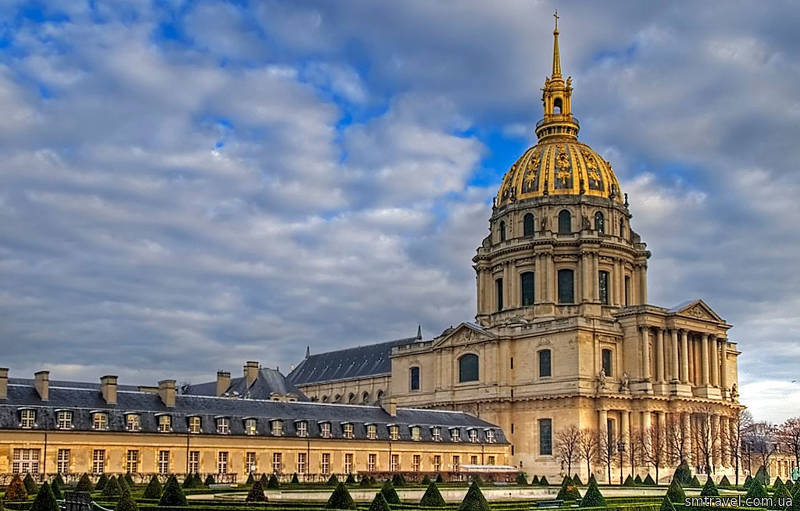
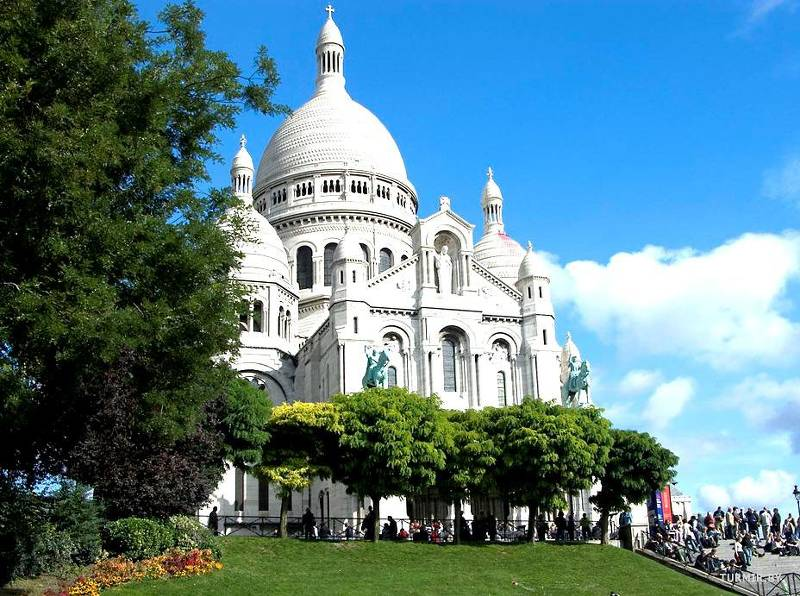
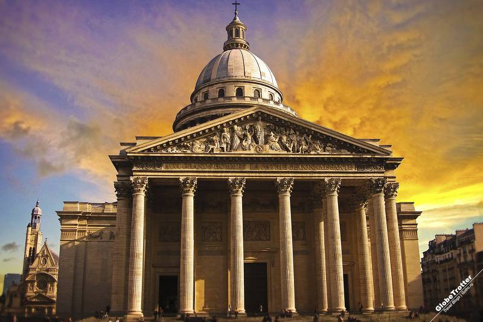
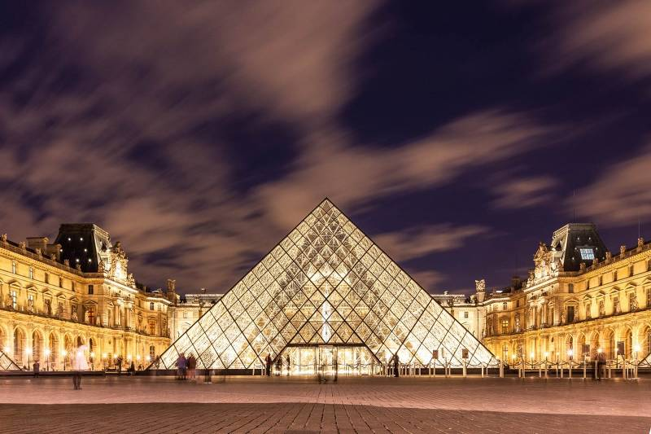
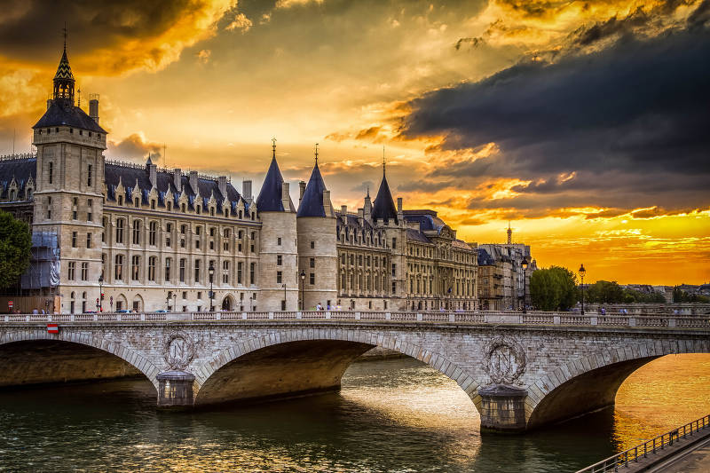

1. Поклониться Наполеону. Дом инвалидов

Дом инвалидов, тяжело раненных во время военных действий. На строительство этого учреждения было дано согласие проекту архитектора Либерала Бранта, который предложил возвести целый дворец. Создание Дома инвалидов длилось около 6 лет, с 1671 года по 1677 год. Он расположен недалеко от символа Парижа, Эйфелевой башни, южнее реки Сены.В Доме инвалидов до сих пор можно встретить военных, только не больных и раненных, а в красивой парадной форме. Теперь там организовывают различные церемонии.В этом учреждении также открыто 4 музея, которые посвящены истории войн Франции. В Музее Армии посетители могут увидеть большое количество оружия разных времён, старинные доспехи воинов и различные знамёна. Музей Шарля де Голля (основателя Пятой республики) расскажет о жизни и службе великого французского генерала и президента. В чертогах Музея планов и рельефов туристам откроется взор на модели военных сооружений и городов. А в Музее Ордена Освобождения проводится выставка в честь памяти о героях Второй Мировой войны.В центре комплекса покоится известный на весь мир полководец и император Наполеон Бонапарт Первый. В место, где стоит его саркофаг, невозможно зайти не пригнувшись. Такая особенность была нарочно сделана архитекторами, чтобы каждый посетитель при входе в лёгком поклоне отдавал дань уважения историческому деятелю.
2. Символ вечной любви. Базилика Сакре Кер

Название этой достопримечательности переводится как «Святое Сердце». Базилика Сакре Кер стоит на холме Монмартр. В давние времена борьбы христианства и язычества приверженцы многобожия ловили христиан и казнили их на этом холме. Существует легенда, что на Монмартре убили и Сен-Дени, первого епископа Парижа. Он не прекращал молиться до момента соприкосновения лезвия с его шеей, а затем встал, поднял отрубленную голову и ходил, пока его рот не закончил говорить молитву. При посещении храма можно встретить его безголовую статую.Базилика названа в честь святой и вечной любви Иисуса Христа к человеку. Сакре Кер была построена во время франко-прусской войны, когда народ больше всего нуждался в покаянии. Люди выбрали место, откуда храм можно было бы увидеть из любой точки города, и вместе собрали средства. Проектированием строения занялся архитектор Поль Абади, которому не суждено было увидеть своё творение из-за смерти в 1884 году. Дальше над возведением базилики трудилось шесть архитекторов. Каждый из них добавил в облик святыни что-то прекрасное.Удивительно, что строение, которое должно было стать символом покаяния и мира, было закончено в тот же год, когда началась Первая Мировая война.Сейчас базилика открыта для посещения, летом до 7 вечера, а зимой до 6.
3. Собрание великих деятелей. Пантеон

История создания ещё одной крупной достопримечательности начинается в 1744 году. У престола Франции тогда был король Людовик 15. Прямо накануне запланированных завоеваний он сильно заболел. Многие приближённые думали, что его величество не спасётся и скоро умрёт. Людовик 15 много молился Святой Женевьеве. Он дал ей обещание, что если выздоровеет, то построит в честь покровительницы Парижа храм. Так и случилось. Королю удалось пережить тяжёлую болезнь в отличие от своей любовницы, которая заразилась от Людовика и умерла. Его величество долго пребывал в печали, а затем полностью ушёл в королевские дела.Но Людовик не забыл об обещании, данном Святой Женевьеве. Спустя 11 лет архитектор Суфло начал проектирование храма.В Пантеоне покоятся великие исторические деятели, такие как Вольтер, Жан-Жак Руссо, Александр Дюма, Жан-Поль Марат, Мария Складовская-Кюри, Эме Сезер, Софи Бертло и другие. Французский народ очень тщательно выбирает, кого захоронить в храме. Всего под стенами этого здания погребён прах 71 человека.Ещё в Пантеоне находится модель маятника Жана Бернара Леона Фуко, который около 160 лет назад, используя этот маятник, нашёл доказательство тому, что планета Земля вращается. Копия прибора учёного висит под куполом храма.А в куполе Пантеона есть смотровая площадка, с которой открывается чудесный вид на Париж. Чтобы полюбоваться нереальной красотой города, туристам необходимо заранее узнать, в какое время туда открыт доступ, а затем преодолеть 206 ступеней вверх.
4.Таинство улыбки. Лувр

В топ мест, которые стоит посетить не мог не попасть один из лучших музеев мира, Лувр. Многие посетители приходят туда с целью увидеть знаменитый портрет «Мона Лиза», что может оказаться весьма затруднительным. Зал, где размещена картина Леонардо да Винчи практически в любое время сильно заполнен любителями и экспертами искусства.Помимо «Джоконды» и её таинственной улыбки, в Лувре хранится огромное количество других мировых шедевров и экспонатов (всего коло 35 тысяч). К примеру, в отделе Денон располагается галерея, где представлены работы итальянских и французских живописцев. В крыле Ришелье находятся покои первого президента Второй республики, Наполеона Третьего, а в отделе Сюлли можно познакомиться с историей самого Лувра.За одно посещение невозможно обойти все залы, поэтому стоит сразу определиться с тем, на что хотелось бы посмотреть.
5. Катились по полу головы. Дворец Консьержери

Этот дворец получил негативную славу в 18 веке. Во времена французской революции в его стенах отсекали головы тем, кто был не согласен с новым режимом. Изначально Консьержери был построен для короля Филиппа Красивого в 14 веке.На территории Консьержери расположен «Зал Ратников», который был в 14 веке местом королевских пиршеств. Размеры зала огромны – 2000 кв. м. по площади. За столом, от которого сохранилась только часть, обедало около 2000 человек. В королевской столовой есть прямой путь на кухню. Там можно увидеть четыре очага, каждый из которых предназначался для приготовления какого-либо вида пищи, птицы, рыбы, мяса и овощей. На очаге для жарки мяса можно было приготовить, не разделывая, быка.Также во дворце благодаря стараниям реставраторов сохранилась часовня Сент-Шапель. Её возвели по приказу короля Людовика 9 Святого в 13 веке. Исполнено это строение в стиле готики. Раньше оно было хранилищем ценных реликвий и местом, где молилась королевская семья.